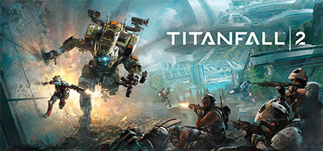
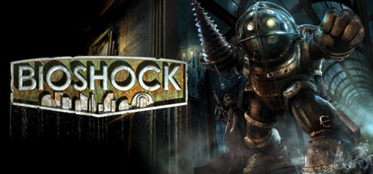

Story Games
Story games are usually made for one player to play at a time. These games don't require a constant connection to the internet and can be played offline. These games allow the player to play the game as if they were the character themselves. Most of these games allow the player to explore the world in which they can do various activities or favors for other characters. Story games tell the characters story through a variety of missions that the player has to play through. Players may find that they feel for their character, since they have seen what the character has been through and what they endured. These characters feel real at times. To make a comparison, these games feel like an interactive movie where the players have full control of the character.
Red Dead Redemption II
Red Dead Redemption 2 is a game created by Rockstar Games, released in 2018. The game takes place in 1899 during the time the Wild West was dying as the industrial age was coming closer. The game has you play Arthur Morgan, an outlaw and a member of the Van der Linde gang. The game allows the player to do whatever they would like in the beutiful open world, you can fish, hunt, rob trains and many other things. The story continues to play out as Arthur Morgan starts to see that his life style isn't good and decides to change after that realization.
Jedi: Fallen Order
Jedi: Fallen Order takes place in the Star Wars universe. You play as Cal Kestis, once a padawan to a Master Jedi. The once great Jedi Order has fallen and now he hides from the ruthless Empire. Later he is forced out of hiding and is tasked with a mission that could help bring back the Jedi Order and bring peace to the galaxy. The game guides the player throughout various planets in order to continue the story. The game has a skill tree which allows the player to gain new abilities as they level up. These abilities include new combat mechanics revolving around The Force (ability to move and manipulate objects or people) or movement abilities that allow the player to reach places they couldn't before. The player is also able to find customization options. Kyber Crystals allow the player to change the color of their lightsaber. They can also find different metals and components to further change the look of their lightsaber. Different clothes can be found too, allowing Cal to have a personalized look.
Other Recommendations
- Titanfall 2
- Bioshock
- Skyrim

